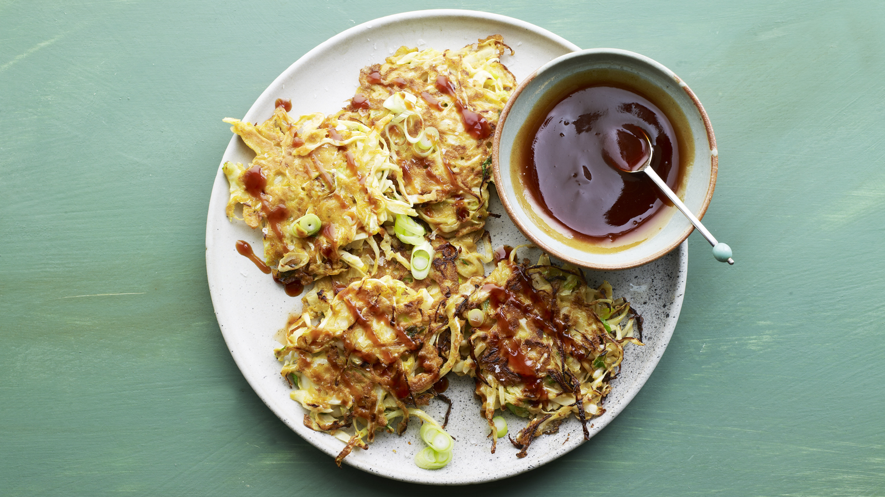

Okonomiyaki

Description
Okonomiyaki are traditional japanese pancakes, often served with okonomiyaki sauce, kewpie mayo or hot sauce.
This recipe creates 2 servings of Okonamiyaki, requiring less than 60 minutes in total.
Ingredients
Okonomiyaki Sauce
- 1 1/2 tablespoons tomato ketchup
- 1 1/2 tablespoons Worcestershire sauce
- 2 tablespoons runny honey
- 1 tablespoon dark soy sauce
Okonomiyaki Pancakes
- 3 large free range eggs
- 3 tablespoons plain flour
- 1/2 teaspoon sea salt
- 1/2 teaspoon dark soy sauce
- 1/2 teaspoon toasted sesame oil
- 2 large spring onions, thinly sliced
- 275g white cabbage, shredded
- sunflower oil
Steps
- For the okonomiyaki sauce, whisk together the tomato ketchup, Worcestershire sauce, honey and dark soy sauce in a small bowl until combined. Set aside.
- To make the okonomiyaki batter, whisk together the eggs, flour, salt, soy sauce and toasted sesame oil until smooth.
- Fold the spring onions and cabbage into the batter until everything is well coated.
- Heat enough oil to just cover the bottom of a large frying pan over a medium–high heat until shimmering. Line a warmed plate with a couple of sheets of kitchen paper.
- Spoon some of the cabbage mixture into the pan into pancake shapes that are about the size of your palm. Press down with the back of the spoon and fry until golden-brown on each side, flipping halfway. Transfer the pancakes to the kitchen paper to drain.
- Fry in batches until you’ve run out of mixture – you should get about eight pancakes.
- Serve the pancakes drizzled with the okonomiyaki sauce.